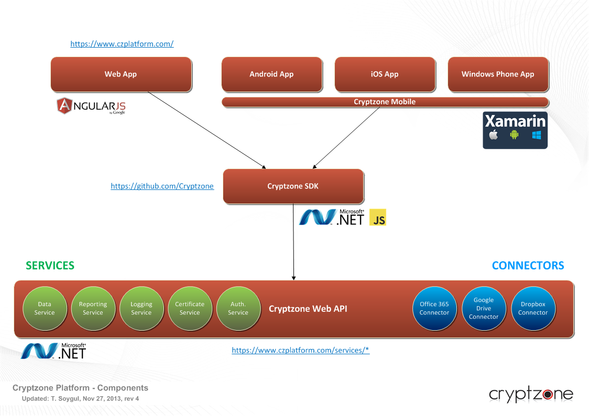
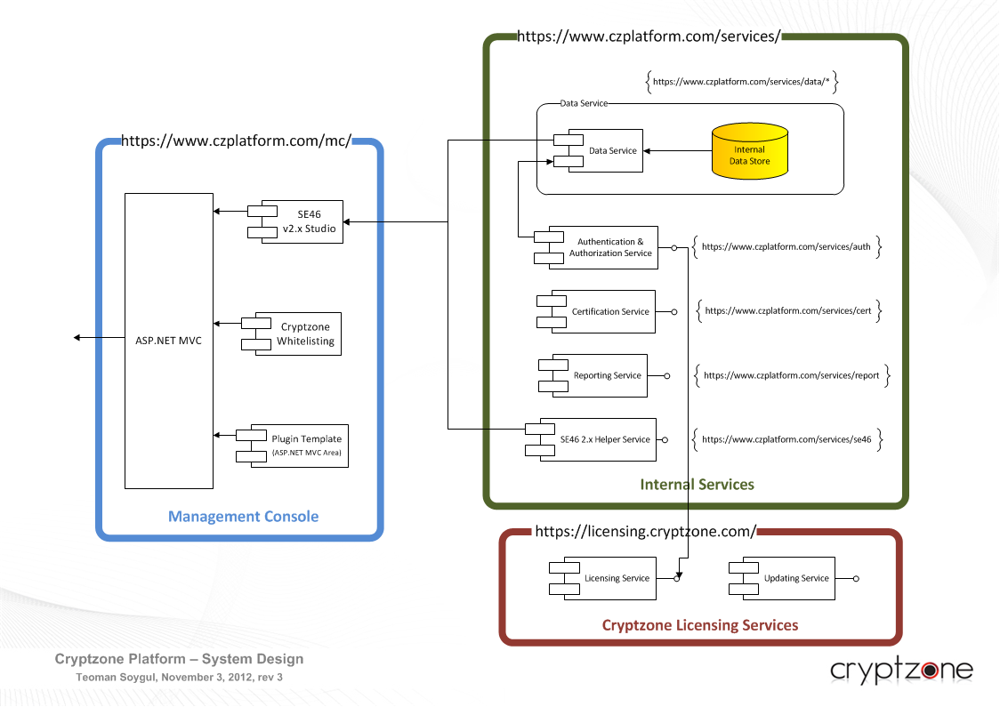
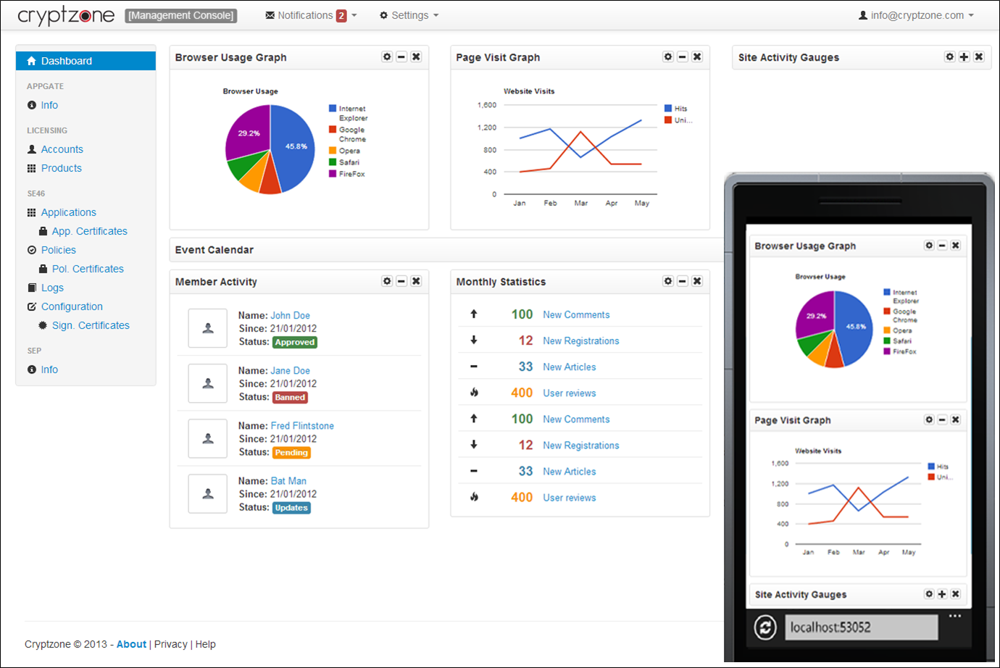
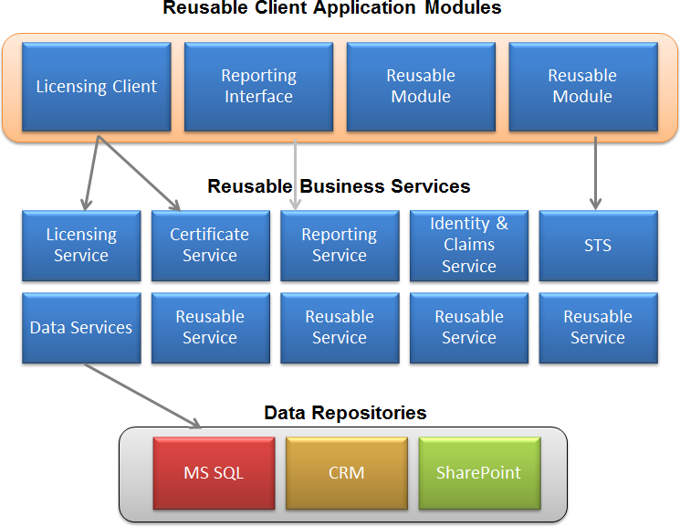
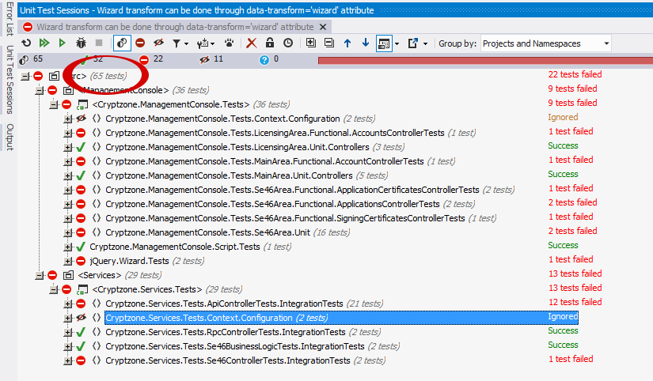
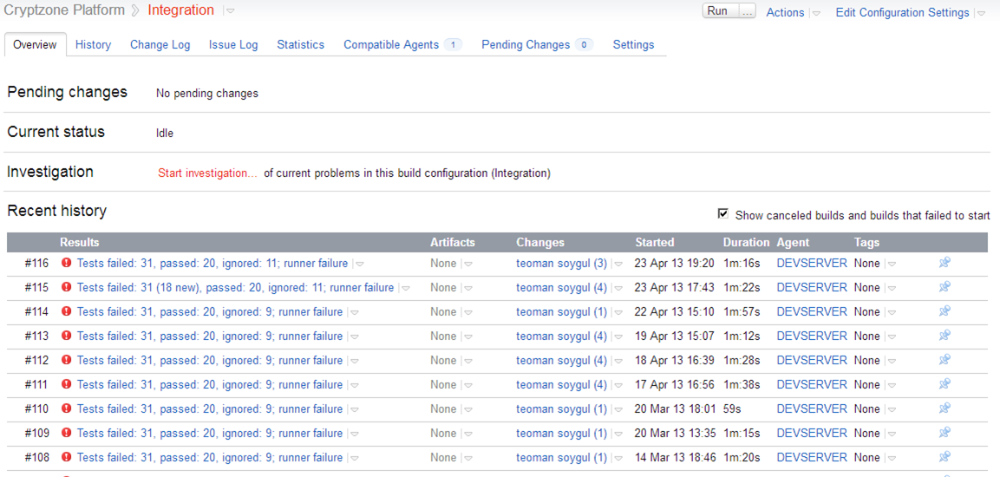
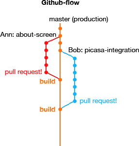
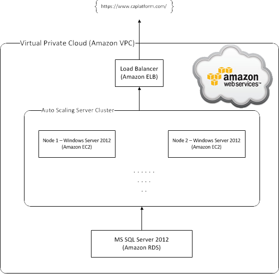
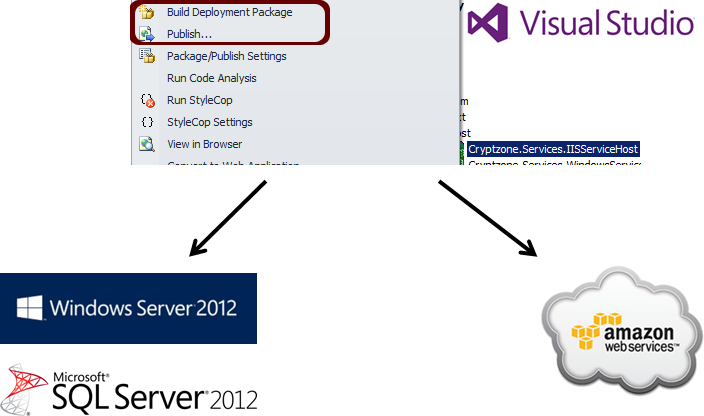

Cryptzone Platform project is the reimagining of a 10 year old tradition at Cryptzone. Built on top of .NET Framework 4.5 and ASP.NET MVC & Web API, this project aims to create a unified and cloud based product line. Until now, Cryptzone was made up of discrete product families acquired through various mergers and acquisitions. With this project, we’re trying to unify the company’s product portfolio once again, sharing a common API and a front-end, and all hosted on the cloud. I say ‘once again’ as this is not the first time this was done. SEP (Simple Encryption Platform) was the company's first successful platform implementation, merging Secured eMail & eDevice line of products. Since the initiators of this project left the company, it's now up to me to lead the project and establish the cooperation between discrete product teams to realize this dream of merging the rest of the products, as much as the technology permits.
For the year 2014, we are migrating the front-end to AngularJS. We're also going to use Xamarin to build our mobile clients in C# for Android, iOS, and Windows Phone with major code reuse.
The dominant business case for this project is the need for a unified product line. Another prevailing case is the inevitable necessity for a cloud move. Providing all the products as cloud-hosted services as well as a unified on premise installer has always been a top priority. The existing product line is made up of very diverse technologies, .NET, Java, C/C++, Python, etc. and they are built on different platforms, Windows, Linux, and Solaris. Hence I’m conscious that not all the components will make it into a unified package or service, but I will push everyone to put in as much as possible.
Starting with the login screen, everything about the Cryptzone Platform is unified. Same goes not only for the user interface, but also for the backend and the infrastructure, as it will be revealed in the technical details section.
Cryptzone Platform is made up of a small RESTful Web services, and each service is made up of publicly accessible resources and sub resources. This service-oriented architecture makes modularity very easy in the form of reusable services, which also makes scalability effortless. All of these small services put together make up the Platform API, which is the foundation for us and 3rd parties to build great integrated apps. For instance, the UI of the platform, which is our unified Management Console, makes it possible to manage all product configurations through a singular UI, and it is a simple modular Web app built on top of the Platform API. Likewise, other software developers that would like to build products that integrate with our Platform can utilize this API to build products that mixes seamlessly with the Cryptzone product line. In addition, many of our existing customers want to integrate their build and production environments as well as their internal software systems with our products. This API gives them the chance to do so, with very little effort. You can find the link to the Platform SDK at the resources section, which makes our simple to use API even simpler, with very detailed documentation, samples, best practice guides and programming language specific constructs.
The above diagram simply summarizes the back-end architecture. The entire platform is built up of small, self-contained services which are specialized in their functionality. Since all the code is authored using test-driven development, these small services are independent, very well tested and very solid reusable pieces of modules that are accessible through their own HTTP endpoints. Any client application built on top of these services (aka the Platform API) is basically a service client that is communicating with our platform. As we enforce fine grained security on each service with claims-based authorization, we can easily grant different access rights to our own client application (i.e. our unified Management Console UI app) or 3rd party applications, or even customer apps.
The front-end of the entire platform is a modular Web application that is the 'unified management console for all products'. It is a pluggable ASP.NET MVC application which uses Twitter's infamous front-end UI framework, Bootstrap. Thanks to Bootstrap framework, the entire UI is desktop, tablet, and mobile ready. Widgets, tables, and other elements on the screen reorder and resize themselves based on the screen size. As you can see from the following screenshot, the UI is still very functional even at the smallest screen sizes.
The front-end application is composed of product specific modules (using ASP.NET MVC's areas concept) where each product has its own plugin which acts as that product's management console UI. Overall, all the management consoles for all the products are under the same hood. Based on the user's license per product, those UI plugins are activated or deactivated (just as their access to product specific back-end API). Like the rest of the platform, the front-end Web app is also hosted on the cloud and scales easily, as it is sessionless. Finally, we make very good use of progressive enhancement in the front-end. Everything is initially built using pure HTML5 and CSS3. During the second iteration of our agile development process, we enhance the existing functionality using jQuery and AJAXify most of the user interactions, hence enhancing the user experience.
The back-end Web services encapsulate all the business logic for the platform. All these services put together make up bulk of the Cryptzone Platform, where all other applications are built upon. This approach is commonly referred to as the service-oriented architecture and is the basis for most modern Web-based systems. Apart from being distributed, this architecture is also very scalable. All the services in the system are RESTful so we simply pass resources through basic HTTP requests. RPC requests are not allowed (at least not externally) so no session or state information is stored in the services, which also contributes to the system scalability.
The entire back-end is built using ASP.NET Web API, which is a fabulous framework for building RESTful HTTP services. For data persistence, we've used Entity Framework with 'code-first' approach. The auto-migrations feature of EF, which automatically upgrades the database schema based on the changes in the data model classes, is invaluable for our continuous integration and deployment strategy. For data model to DTO mappings, we do use the great AutoMapper library which allows us to use different object models for different purposes (like data persistence, data distribution, etc.) and never be bothered with object-to-object mappings, except for simple binding configs. We also make great use of ELMAH (Error Logging Modules and Handlers library), which helps us to collect error logs both from our back-end Web API and front-end Web apps. I should also mention that we're using the wonderful Ninject IoC library everywhere. As dependency-injection is one of the pillars of test-driven development, we use Ninject to automatically inject dependencies for our components both on the front and the back ends. Finally, we are utilizing Microsoft Dynamics CRM, SharePoint, and AD SDKs for various integrations with our internal sub systems (like licensing, customer lead generation, internal auth., etc.).
Cryptzone Platform has a publicly accessible Web API. As a Cryptzone customer, you are entitled to access the entire API for the products that you have a license for. All of the Web API is accessible via HTTPS and you need to supply your access token along with any request (just like you would with the Facebook Graph API). This Web API is immensely important for extensibility and 3rd party integrations. For anyone using .NET or JavaScript, we also provide an SDK, which further facilitates access to the platform API. For .NET and Visual Studio users, it is as easy as typing the following command to install and start using the SDK:
install-package Cryptzone
JavaScript SDK as well as the .NET one are both open-source and are hosted on GitHub (see resources section at the end of the article). Of course, you don't need to use the SDK to access the API. Simple GET/POST/PUT/DELETE requests are all what you need to access the RESTful Web API like:
curl --request GET 'https://api.czplatform.com/se46/policies/27?access_token=...'
If you choose to use the SDK however, you won't even need to deal with the explicit resource URIs. Using C#, you could simply do:
var client = new CryptzoneClient("access-token");
var httpResponse = await client.Policies.GetPolicies();
httpResponse.Message.EnsureSuccessStatusCode();
var policies = await httpResponse.Data;
foreach (var policy in policies)
{
Console.WriteLine(policy.Name);
}
Finally, I should mention that access to resources are strictly controller via a claims-based authorization mechanism. You can only access resources permitted first by your license then by your system admin (who can grant fine-tuned access to certain resources within a corporation).
TDD is one of the essentials of this platform project. Obviously, designing a unit-testable software takes a thoroughly different mindset so we embrace TDD as a culture at Cryptzone. To create unit-testable software, we employ SOLID principles all the way down; dependency-injection and use of interfaces being the most important of these principles. Since the entire system is modular and each module is designed to be testable, we employ all the existing automated testing methodologies including unit, integration, and functional testings. As we always program against interfaces and use dependency injection, we easily do a top-down development workflow, mocking all the dependencies of the top level classes as we go down. This clearly paves the way for crystal clear unit testing. We continue writing unit tests in a top down manner which is followed by addition of the missing method implementations. Our tests are our specs so the implementations always fit the specs. Once unit tests are passing and classes are functional, we proceed to doing integration tests, to verify that the units of functionality play nicely together, hence verifying features. Once all the integration tests are also passing, we proceed to writing functional tests, to verify an entire user story. Functinal tests generally involve ecercising the system through the user interface, again using automated tests.
The preceding screenshot belongs to the initial prototype of the system. Even then, we had almost a hundred tests modelling the back-end and the front-end, making good use of unit, integration, and functional tests. We do use Visual Studio as our primary IDE both for our C# and JavaScript development. xUnit.net is our primary C# testing framework while QUnit (along with Sinon.JS) is used for jQuery and other JavaScript unit testing. We also use the superb mocking library, Moq, to mock out dependencies of classes during top-down unit testing and development. Even though we use the same set of tools with unit and integration tests, functional testing requires more elaborate tooling. We utilize Google's Selenium framework to automate browser based functional testing. Using the infamous page-object pattern, we model our UI as page objects using ordinary classes, and let Selenium exercise those UI components in a given workflow as per the user story dictates. Thanks to Selenium, we are able to simulate pretty much any user interaction (button clicks, form submission, file uploads, etc.) just as we would do with manual testing. Selenium is also capable of repeating the tests over and over again with different browsers and browser versions.
As we have embraced a continuous delivery philosophy, we deploy code changes multiple times a day to our production servers. This is made possible by our continuous integration server, TeamCity, which handles building, testing, and deployment of new changes each time we commit to our master branch in our source-control server (Git). TeamCity, with tons of .NET support, makes our lives pretty easy over here, in combination with PowerShell which is the super glue of our build process.
We have embraces an agile and iterative development processes for this project. We do keep our user stories and tasks in check with our Kanban board using YouTrack. All we do is to make sure that user stories are properly broken down into small tasks and iterations keep flowing smoothly. A simple cumulative flow chart makes tracking of the task flow pretty easy. I should also mention that we do use GitHub Flow as our development workflow.
We have a single master branch, and as soon as anything gets committed to this branch, the code gets compiled, tested, and deployed to the cloud. This cycle repeats itself multiple times a day. We simply do all our development on feature branches, and make a pull request as soon as the work on that branch is done. After the pull request is reviewed, discussed, and signed of, it is merged and deployed to production servers. Of course, this is only made possible by our supreme confidence in our large automated testing suite (which didn't disappoint us for the past two years and for several thousand deployments!). I should also state the importance of code reviews (in the form of pull requests) along with regular tech discussions, but that goes without saying.
Both our back-end services and front-end apps are hosted on the cloud. Even though we provide enterprise deployment option through a regular Web deployment package (for IIS with Web Deploy), we encourage customers to use our hosted service account, to get the full potential out of the platform. The entirety of our server infrastructure is hosted on AWS (Amazon Web Services). First of all, the whole infrastructure lives in a VPC section in the Amazon Cloud, thus sectioning of our infra from the other servers in the cloud. All the requests to the services and apps are distributed among the servers via Elastic Load Balancer. This load balancer starts new server instances if existing servers get overwhelmed, and shut them down back again when they are not needed anymore. As our Windows servers, we use Elastic Cloud Computing units (mostly small and medium ones). As mentioned, auto-scaling of these servers is controlled by the balancer. Finally, we use Amazon Relational Data Services for our SQL servers, where everything is again automatically scaled as needed. Thus our server systems are all auto-scaling, with big thanks to stateless design of our services and apps.
Deployment to our cloud infrastructure is as simple as publishing a new build of our services or apps through either Visual Studio or TeamCity to our master server node, which handles zero-downtime deployment. Preparation of the Web deployment package is handled by the build server automatically (or can be done manually within Visual Studio). The customers that choose the on premise deployment option simply needs a Windows Server 2012 (or above) server and SQL Server 2012 (or above).
Following are two proof-of-concept videos, demonstrating the capabilities of the platform. First one is about platform integration with cloud storage providers (including DropBox, Google Drive, SkyDrive, etc.) for encrypted file storage and sharing. The second one demonstrates user level access rights management integration with online document collaboration tools (like SharePoint Online, Google Docs, etc.). Note that we branded this feature set of the platform with a unique product name: "Secured eCollaboration Online".
Following are the current resources related to this project. I'll expand this section as we publicize the project more and more.
You can also check out this presentation detailing how we do TDD with subsystems of this project.